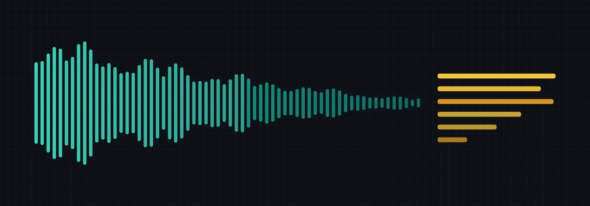

Studio · Interfacce · ottobre 2026
La voce ritorna, a bassa voce
La voce torna a farsi sentire: non come Alexa, ma come dettatura e come conversazione con l’IA. Ho letto gli studi degli ultimi due anni, e quelli più vecchi su cui poggiano, per capire quanto è veloce, quanto spesso fraintende, quanto stanca e quanto mette in imbarazzo. La sorpresa: a cambiare più in fretta non è il coraggio di chi parla al computer. È la voce, che si fa più bassa.

Trasparenza. Sviluppo Speak-Y, un’app per l’input vocale. Ogni volta che un numero viene da un’azienda che parla di sé, il testo lo dice e i grafici lo disegnano tratteggiato, ben distinto dai dati indipendenti.
Gli assistenti si sono fermati. La dettatura è decollata, a sentire le aziende
Dite «Alexa, imposta un timer» e state usando il primo tipo di input vocale. Dettate un’email invece di scriverla a mano, e state usando il secondo.
In tutto i tipi sono cinque, e negli ultimi due anni hanno preso strade diverse: i comandi agli assistenti, la dettatura di testi, i messaggi vocali, la conversazione a voce con i modelli di IA e la voce usata per programmare o per affidare compiti ad agenti di IA.
Il primo tipo ha smesso di allargarsi. Negli Stati Uniti possedeva uno smart speaker il 33% delle persone nel 2021 e il 35% nel 2025; lo stesso istituto di ricerca ammette che in quattro anni il dato si è mosso appena.1
La Gran Bretagna fa eccezione: dal 25% al 45% negli stessi anni, soprattutto grazie ad Alexa.2 E chi lo possedeva ha continuato a usarlo di più ancora per qualche anno: le attività settimanali affidate a uno speaker sono passate da 7,5 nel 2017 a 12,4 nel 2022.3
Sul piano commerciale, però, la prima ondata è fallita. Tra il 2017 e il 2021 la divisione dispositivi di Amazon ha perso più di 25 miliardi di dollari, perché la gente usava Echo per sveglie e meteo, non per fare acquisti.4
La seconda ondata si vede quasi solo in ciò che le aziende raccontano di sé. Wispr Flow, un’app di dettatura, è passata da una valutazione di 700 milioni di dollari nel novembre 2025 a 2 miliardi nell’agosto 2026.5
Google afferma che il 63% degli oltre un miliardo di utenti mensili dell’app Gemini «usa la voce», senza spiegare come l’abbia contato.6 Apple dice che le richieste a Siri sono cresciute da circa 1,5 miliardi al giorno nel 2024 a più di 2,5 miliardi nel 2026.7
I grandi sondaggi indipendenti — Pew, YouGov, Edison, Ofcom — non chiedono ancora della dettatura o delle chat vocali con l’IA come domanda a sé. Il più vicino ha rilevato che il 57% degli americani dai 12 anni in su aveva usato almeno una volta un assistente di IA generativa, scrivendo o parlando.8
Insomma, la curva di crescita della seconda ondata la disegnano le parti interessate.
Barre piene: sondaggi con metodo e campione noti; la tacca scura indica l’anno precedente. Barre tratteggiate: numeri che un’azienda ha dato su se stessa e che dall’esterno non si possono verificare; la tacca indica la dichiarazione precedente. Le due metà non stanno sulla stessa scala.
Edison Research tramite SSRS128 · YouGov9 · Apple tramite la stampa7 · TechCrunch5 · Google tramite la stampa6
I messaggi vocali, il terzo tipo, sono un’abitudine di massa, ma non in crescita. L’ultimo conteggio ufficiale di WhatsApp, del marzo 2022, parlava di 7 miliardi al giorno.10
In un sondaggio YouGov su 2.442 americani del febbraio 2026, circa il 10% usava i vocali più volte a settimana e il 41% diceva che il formato non lo riguardava. Chi li usava meno di prima (12%) era tanto quanto chi li usava di più (11%).9
Tre volte più veloce per copiare. Circa 1,4 volte per comporre
Ecco il numero più citato sulla voce: parlare è tre volte più veloce che digitare. È vero, ma per copiare. Nell’esperimento da cui viene, 48 persone, 24 per lingua, ricopiavano su un iPhone brevi frasi già pronte.
A voce facevano 153 parole al minuto contro 52 con la tastiera sullo schermo in inglese, 123 contro 43 in mandarino.11 Gli autori stessi lo definiscono un limite superiore raggiunto in laboratorio. E nessuno scrive copiando.
Nel 2020 Foley, Casiez e Vogel chiesero a 28 persone di comporre una frase propria al telefono, collegando tre semplici immagini. Nei momenti in cui le parole venivano davvero pronunciate o digitate, la voce restava tre volte più veloce: 116,5 contro 35,1 parole al minuto.
Ma sull’intero tentativo — pensare, parlare, correggere — un messaggio richiedeva 20,8 secondi a voce e 29,2 con la tastiera. Circa 1,4 volte, non tre.12
Compito di composizione. La parte chiara di ogni barra è il tempo per pensare prima della prima parola; la parte piena è parlare o digitare, più eventuali correzioni.12
La differenza se la sono mangiata due cose. Prima della prima parola, chi stava per parlare rifletteva il doppio: 11,0 secondi contro 5,3. Scrivendo si pensa strada facendo; parlando, prima si costruisce la frase in testa.
E ogni correzione costava cara: con entrambi i metodi e in entrambi i compiti, i tentativi che richiedevano una correzione procedevano a 54,6 parole al minuto, contro le 141,1 di quelli puliti.
Per avere un’idea delle proporzioni: i volontari di un test di dattilografia online facevano in media 52 parole al minuto su una tastiera fisica, su 168.000 persone,13 e 36 al telefono, su 37.000.14
Non esiste un confronto controllato tra comporre a voce, con il riconoscimento vocale di oggi, e comporre su una tastiera da scrivania. L’ultimo risale al 1999.
Chi dettava per la prima volta componeva a 7,8 parole al minuto, correzioni comprese, contro 19 con tastiera e mouse; nel copiare un testo, 13,6 contro 32,5.15
Misuratevi: le dita contro la bocca
Due cronometri e una frase. La pagina non accende mai il microfono e non può sentirvi: misura soltanto quanto tempo impiegate e trasforma i due tempi in due velocità.
- ScrivetelaDigitate la frase qui sotto. Il primo cronometro parte dal primo tasto e si ferma quando premete Invio.
- DitelaTenete premuto il pulsante, o la barra spaziatrice, e leggete la stessa frase ad alta voce al vostro ritmo normale. Il secondo cronometro corre finché tenete premuto.
- ConfrontateStessa frase, due tempi. La pagina li converte in parole al minuto e li mette accanto agli studi.
Potresti spostare la nostra chiamata di giovedì al pomeriggio e mandarmi prima gli appunti della settimana scorsa?
Le vostre velocità accanto a quelle degli studi
La vostra velocità a voce è quella della bocca, non quella della dettatura: qui non viene riconosciuto nulla e non c’è niente da correggere. Il rapporto tra i vostri due numeri è il massimo che la voce possa darvi.
Nell’esperimento di Foley, il solo parlare era 3,3 volte più veloce del digitare, e il tentativo completo 1,4 volte: tolti il pensare e il correggere, del vantaggio sopravviveva circa il 40%.
Quello che la macchina sente dipende da chi parla
Dite «sposta la riunione a giovedì alle dieci» in una stanza silenziosa, con la dizione di un annunciatore del telegiornale, e un buon sistema di riconoscimento la trascriverà giusta. Ditela con l’accento di Lagos e il rumore di un bar, e potrebbe scrivere «gioverà alle diete».
Il riconoscimento si misura con il tasso di errore sulle parole: la quota di parole sbagliate, saltate o aggiunte. Nell’ottobre 2025 il miglior modello di una classifica pubblica di riferimento faceva in media il 5,63% sui suoi insiemi di prova.
Whisper large-v3, il modello aperto su cui poggiano molte app di dettatura, faceva in media il 7,44%.16 Per confronto, nel 2017 una trascrizione professionale accurata di conversazioni telefoniche registrate è stata misurata al 5,1%.17
Queste medie nascondono chi parla. Su una raccolta di inglese parlato in conversazione, con accenti da tutto il mondo, Whisper sbagliava il 19,7% delle parole, contro il 2,7% sull’inglese americano letto in condizioni pulite.
Per l’inglese nigeriano e giamaicano anche i modelli più forti superavano il 20%, e un modello accademico il 45%.18
Nel 2020 cinque sistemi commerciali sbagliavano il 35% delle parole dei parlanti neri e il 19% di quelle dei parlanti bianchi: lo stesso sistema, quasi il doppio degli errori.19
La frase ha 26 parole; gli errori cadono dove fanno più danni, per mostrare che cosa significa il tasso, non per simulare un sistema in particolare.
Open ASR Leaderboard, ottobre 202516 · Microsoft Research, 201717 · EdAcc18 · Koenecke et al., 202019 · Careless Whisper, 202420
Il riconoscimento generativo ha portato un nuovo tipo di guasto: inventare. Whisper ha aggiunto frasi intere di sana pianta in circa l’1% delle trascrizioni, e il 38% di queste invenzioni conteneva qualcosa di dannoso, come violenza o affermazioni false.20
Le pause lunghe, frequenti nelle persone con afasia, rendevano le invenzioni più probabili. Una frase inventata è peggio di una parola fraintesa, perché si legge senza intoppi.
Il collo di bottiglia si è spostato dal riconoscimento alla correzione. Correggere a voce pone due problemi ancora irrisolti: distinguere un comando dal testo da trascrivere, e indicare il punto da sistemare.
Toccare lo schermo vicino all’errore mentre si pronuncia la correzione, lasciando a un modello linguistico il compito di capire cosa va dove, ha ridotto il tempo del compito del 16,4% e i tocchi sulla tastiera del 47,5% rispetto al miglior metodo precedente, in un test con 16 persone.21
Il testo dettato esce anche prolisso e slegato, ed è per questo che le nuove app lo riscrivono con un modello linguistico prima di incollarlo. In uno studio con diario di 7–10 giorni con uno strumento del genere, 9 autori su 12 si sono adattati, con un comfort mediano di 5 su 7.
Chi è rimasto dubbioso ha indicato le difficoltà di sempre: pensare alla frase successiva mentre si parla, e mettere il cursore dove deve stare.22
La voce accelera la bocca, non la pianificazione
Se la voce è tre volte più veloce, perché scrivere non diventa tre volte più veloce? Perché scrivere, per la maggior parte, non è battere i tasti.
Uno studio del 1983 sulla stesura di lettere ha rilevato che circa due terzi del tempo di composizione vanno nella pianificazione: tra il 58% e il 78% nelle diverse configurazioni provate.
Le lettere venivano bene allo stesso modo scritte a mano, dettate o pronunciate.23 Un canale d’uscita più veloce accelera solo il terzo che resta.
Nel 2000 Ben Shneiderman propose il meccanismo: parlare e memoria a breve termine attingono alla stessa risorsa, mentre muovere una mano procede in parallelo al pensiero.
In uno degli esperimenti del suo laboratorio, i comandi vocali erano del 12–30% più veloci del mouse, ma pronunciarli ad alta voce rendeva più difficile ricordare simboli che andavano poi ridigitati.24
Gli studi successivi si dispongono lungo un’unica linea, dal copiare al risolvere. Dove il lavoro è copiare, la voce vince in velocità e sembra più facile. Dove il lavoro è comporre, la voce è un po’ più veloce e la fatica percepita è la stessa.
Dove il lavoro è risolvere un problema, la voce affatica di più la mente. Su 50 persone che usavano un assistente medico in chat, parlare aumentava il carico mentale misurato sia nei compiti difficili sia in quelli semplici.25
I 35 medici di pronto soccorso che documentavano a voce erano più lenti del 18,1% e commettevano 138 errori contro 32.26
I vincitori netti sono le persone il cui collo di bottiglia è la mano o l’ortografia. Gli studenti con disturbi dell’apprendimento scrivevano temi migliori con il riconoscimento vocale che a mano; per gli altri studenti non faceva differenza.27
Ruan11 · Foley12 · prompt creativi, 202628 · Riegel et al.29 · Chen et al.25 · Hodgson et al.26 · Shneiderman24 · MacArthur e Cavalier27
Parlare con l’IA sta sulla stessa linea. Nello studio più ampio che ho trovato, 919 studenti di un corso introduttivo di programmazione potevano scegliere come scrivere i prompt per uno strumento di IA. Quasi nove su dieci hanno scelto solo il testo (88,5%), il 4,8% solo la voce e il 6,7% entrambi.
I prompt vocali non ritoccati funzionavano al primo colpo meno spesso: 35% contro 52% nel primo compito e 38% contro 58% nel secondo. Quando gli studenti correggevano la trascrizione, il divario smetteva di essere significativo.29
Nei compiti creativi la voce dava un primo prompt più rapido e richieste successive più numerose e più lunghe, ma non cambiava né la fatica percepita né il giudizio sui risultati.28
Riegel et al., ITiCSE 2026, n = 91929
L’idea diffusa che pensare ad alta voce aiuti regge solo a metà. Nell’insieme di 94 studi, dare semplicemente voce ai propri pensieri non cambiava l’accuratezza e rendeva soltanto il lavoro più lento; l’accuratezza saliva quando le persone dovevano spiegare il proprio ragionamento.30
Spiegare a voce un problema a un modello di IA potrebbe benissimo aiutare. Nessuno l’ha verificato.
La voce si stanca in base alla dose. La dose della dettatura non l’ha misurata nessuno
Digitare tutto il giorno stanca le mani. Parlare tutto il giorno stanca qualcos’altro, e non esiste un limite giornaliero scientifico che dica quanto è sicuro. Ciò che è misurato bene è quanto usano la voce i professionisti.
Gli insegnanti, un mestiere con tassi elevati di disturbi della voce, fanno vibrare le corde vocali per il 23% del tempo di lavoro, contro il 13% fuori dal lavoro e il 12% nel fine settimana, secondo uno studio del 2007 su 31 insegnanti.31
Un gruppo più recente di 26 insegnanti ha dato 16,2%, 8,4% e 8,0%.32 Questo tempo di vibrazione si chiama fonazione: conta solo i momenti in cui le corde vibrano davvero, non le pause tra le parole.
Il corpo se ne accorge presto. Nella lettura ad alta voce, un indicatore oggettivo dello sforzo vocale sale già nei primi 15 minuti, e le persone lo avvertono dopo 30, secondo uno studio su 10 persone.33
Dopo due ore di lettura ad alta voce al volume di una lezione in classe, 86 insegnanti hanno giudicato la propria voce in gran parte recuperata entro 4–8 ore, con un piccolo residuo che durava un giorno o più.
Sulle cifre esatte l’articolo si contraddice: l’abstract indica il 90% a 4–6 ore e il recupero completo a 12–18.34
Quota della fatica autovalutata sparita dopo due ore di lettura ad alta voce. La curva passa per i due punti indicati nell’abstract, 90% dopo 4–6 ore e 100% dopo 12–18; le conclusioni danno un più lento 50% e 90%. Per la dettatura sottovoce in un microfono vicino non c’è nessuna curva: quella fascia resta vuota di proposito.
Hunter e Titze, 2009, 86 insegnanti, autovalutazione, cifre dell’abstract34 · Xue et al., 2019, n = 1033
Il mestiere esistente più vicino al parlare con un computer tutto il giorno è quello del call center. In 15 studi, il 33–68% degli operatori aveva avuto problemi di voce in qualche momento della carriera, e il 27% li aveva al momento della visita.35
Un’indagine ha contato 6,8 sintomi vocali per operatore, contro 1,7 nella popolazione generale.36
Le prove dirette sugli utenti della dettatura vengono solo dagli anni ’90 e 2000, quando dettare significava fermarsi dopo ogni parola.
In una serie di casi, cinque persone passate al riconoscimento vocale per il dolore alle mani avevano sviluppato una voce affaticata; dopo la logopedia e sessioni più brevi, tre su cinque erano migliorate.37
Le registrazioni muscolari su 10 persone suggerivano che il carico si sposta invece di sparire: meno tensione costante nell’avambraccio e nel collo, e in parte nelle spalle, e una tendenza a una tensione maggiore nel cricotiroideo, un muscolo della laringe.38
La dettatura moderna elimina la causa sospettata — un parlato piatto, da macchina, con una pausa dopo ogni parola — e mette il microfono vicino alla bocca, così si può parlare piano. È una speranza ragionevole, non un risultato.
Nessuno studio ha misurato il carico vocale in chi usa le app di dettatura di oggi o le modalità vocali dei modelli di IA.
Non conta il luogo. Conta chi ascolta
Immaginate di chiedere indicazioni al telefono a casa, poi su un autobus, poi alla scrivania con i colleghi intorno. Per la maggior parte delle persone la risposta cambia tre volte.
I numeri migliori su questo vengono da un piccolo esperimento britannico. Venti persone tra i 23 e i 32 anni guardavano brevi video di un uomo che cercava qualcosa a voce o scrivendo, su uno sfondo neutro, e poi segnavano i luoghi e il pubblico davanti a cui avrebbero fatto lo stesso.
La voce batteva il testo solo al volante, dove le mani sono occupate.39
Chi ascoltava contava più del dove. Da soli, la voce era accettabile nel 96% delle risposte; con gli amici nell’83%, con il partner nel 78%, con la famiglia nel 71%. Con i colleghi, nel 26%. Con gli estranei, nel 16%.
Tra i tipi di pubblico, solo colleghi ed estranei rendevano la voce significativamente meno accettabile del testo; tra i luoghi, la casa, il sedile del passeggero e il lavoro. Provate su voi stessi prima di guardare le loro risposte.
Parlereste a un dispositivo qui?
Toccate ogni situazione una volta per sì, due volte per no. Poi confrontate con le 20 persone dello studio.
Dove
Davanti a chi
Efthymiou e Halvey, 2016, Regno Unito, n = 20, 23–32 anni, giudizi su video39
In un’indagine su 860 utenti di assistenti vocali, la vergogna riduceva l’intenzione di continuare a usarli proprio in pubblico, mentre l’orgoglio la aumentava ovunque.40
La norma si è mossa comunque. Nei sondaggi americani, usare la voce al ristorante con gli amici è passato da circa il 25% nel 2017 a più del 40% nel 2019. Gli uomini avevano 1,54 volte più probabilità delle donne di usare comandi vocali, e il 46% diceva di infastidirsi quando lo facevano gli altri.41
Prima svanisce la novità. Poi anche la timidezza
Chiunque abbia comprato uno smart speaker conosce la prima settimana: timer, barzellette, musica, domande fatte per il gusto di farle. Poi la novità passa, e resta l’abitudine.
Come cambiano le persone dopo aver cominciato si misura quasi solo sugli smart speaker di casa. In uno studio di tre settimane, 7 persone anziane hanno ricevuto un Echo Dot. I comandi settimanali sono calati di un terzo: 59,6, poi 50,1, poi 39,7.
La musica è scesa dal 23,9% dei comandi al 2,9%, mentre meteo e liste della spesa crescevano. Una partecipante ha raccontato che all’inizio «si sentiva stupida a parlare con questa macchina»; alla fine tutti e sette dicevano di sentirsi più sicuri e che avrebbero continuato a usarla.42
Pradhan, Lazar e Findlater, 2020, USA, n = 7, 1.049 comandi42
I registri più lunghi raccontano altro. Nelle cronologie di Google Home di 18 famiglie, in media 58 settimane, l’uso è rimasto abbastanza stabile.
Tre famiglie hanno smesso di usare lo speaker per settimane poco dopo l’acquisto — per la privacy, perché non serviva o perché l’abitudine non si era formata — e poi ci sono tornate.
Le famiglie che hanno smesso per sempre non sono state studiate. I comandi per gestire la casa sono aumentati man mano che le famiglie compravano altri dispositivi smart.43
Quando le persone si allontanavano, era per utilità, affidabilità o privacy, non perché parlare in casa mettesse a disagio.
Una rassegna di 69 articoli sull’accettabilità sociale osserva che l’accettabilità cambia man mano che ci si abitua a un’interazione, eppure solo tre di essi seguivano persone alle prese con un’interfaccia nella vita di tutti i giorni; la maggior parte chiedeva di immaginarla, o la faceva provare una volta in laboratorio.44
È questa la lacuna centrale per questa pagina. Non ho trovato nessuno studio che segua chi è passato alla dettatura sul lavoro e misuri, settimana dopo settimana, come cambia il suo imbarazzo.
È la cultura a decidere quanto forte può essere la voce
Se rispondete a un messaggio con un vocale o con un testo dipende molto da dove vivete.
In un sondaggio YouGov del 2023 su 17 mercati, il 66% preferiva mandare i messaggi per iscritto e il 7% come audio. La preferenza per il testo era più forte in Gran Bretagna (83%), Danimarca (80%) e Svezia (78%) e più debole negli Emirati Arabi Uniti (38%); in Spagna il 54% preferiva il testo e il 13% l’audio.45
YouGov, novembre 2023, 500–2.001 persone per mercato; sono mostrati solo i mercati citati nel testo pubblicato45
Il cellulare è passato per la stessa strada vent’anni fa. In un confronto del 2007 tra studenti di cinque culture in un’unica università delle Hawaii, parlare al telefono sull’autobus otteneva 2,53 su 5 tra gli studenti giapponesi, contro 3,50 tra quelli svedesi e 3,44 tra quelli degli Stati Uniti continentali.46
Il Giappone si è dato una regola chiara — niente voce sul treno, l’email va bene — e ha abbandonato la voce in pubblico appena è comparsa un’alternativa silenziosa.
Campbell, 2007, n = 271 studenti di un’università delle Hawaii, raggruppati per cultura d’origine46
Negli Stati Uniti, nel 2006, l’82% si irritava almeno ogni tanto per le telefonate ad alta voce in pubblico, e la quota di chi ci si imbatteva spesso è scesa dal 50% al 39% entro il 2012.47
Nel 2014 usare il telefono andava bene per strada per il 77% degli americani, sui mezzi pubblici per il 75%, al ristorante per il 38% — e in riunione per il 5%.48
Il cambiamento è arrivato da entrambe le parti: chi stava intorno è diventato più tollerante, chi telefonava ha abbassato la voce. E si è fermato sulla soglia della sala riunioni.
L’ufficio sta imparando a sussurrare
Nel 2026 la dettatura con l’IA è arrivata negli uffici, e i primi resoconti sono storie, non numeri. Bloomberg la descrive mentre si diffonde da una scrivania all’altra: compaiono i microfoni a collo di cigno e comincia il bisbiglio.49
Un analista citato da Computerworld indica l’imbarazzo e il timore di distrarre i colleghi come un’importante barriera comportamentale.
Thumbtack, un’azienda interamente da remoto, ha dato Wispr Flow a più di 200 dipendenti, e il suo responsabile tecnologico ammette che abituarsi a parlare ad alta voce, anche da soli in una stanza, ha richiesto tempo.50
Il mercato non aspetta che la norma cambi. Abbassa la voce. Wispr Flow vende una modalità sussurro e consiglia di parlare a circa un centimetro dal microfono.51
La ricerca era andata oltre già nel 2018: SilentVoice di Microsoft riconosceva brevi comandi pronunciati inspirando, che lasciavano uscire meno di 39 decibel di suono, con l’1,8% di parole sbagliate per un parlante allenato e il 7% per uno nuovo.52
Le persone sono disposte a barattare precisione con silenzio. In un esperimento del 2021, 12 persone erano disposte a usare il parlato silenzioso — articolare le parole senza emettere suono — con un 10–15% di errori inseriti di proposito tanto quanto senza errori, mentre la voglia di parlare ad alta voce calava.
Tutti e 12 lo attribuivano a privacy e sicurezza.53
Il progresso più rapido non sta nelle persone che diventano più coraggiose. Sta nella voce che si fa più bassa.
L’unico campo in cui si misura su larga scala: le note dei medici
La medicina è l’unico campo in cui l’input vocale basato su modelli di IA è stato misurato su migliaia di persone. Gli scribi IA ambientali ascoltano la visita e preparano una bozza della nota clinica.
Nello studio più ampio, pubblicato su JAMA nell’aprile 2026, circa 1.800 utenti confrontati con 6.770 non utenti hanno risparmiato 16 minuti di documentazione ogni 8 ore di visite, circa il 10%, senza cambiamenti significativi nel lavoro fuori orario.
Solo il 32% usava lo scriba in più della metà delle visite.54
In uno studio randomizzato con 238 medici, uno scriba ha ridotto il tempo per nota di 41 secondi, contro 18 secondi nel gruppo di controllo, e un altro non ha fatto differenze significative.55 Il burnout è sceso dal 51,9% al 38,8% in 30 giorni, in uno studio senza gruppo di controllo.56
Nelle note controllate a mano mancava qualcosa nel 18% dei casi e c’erano dettagli inventati nell’11,5%; il 5,3% conteneva un errore che poteva causare un danno grave.57 La voce ha fatto risparmiare più attenzione che minuti, e il prezzo è ricontrollare il testo.
Gli esperimenti che nessuno ha ancora fatto
Non sono buchi da poco. Ogni scheda qui sotto è una domanda a cui questa pagina voleva rispondere con un numero e non ha potuto, perché nessuno studio l’ha misurata.
Un sondaggio che conti la dettatura
Nessun sondaggio a campione casuale misura la dettatura o le chat vocali con l’IA come comportamento a sé. La curva di crescita poggia sulle dichiarazioni delle aziende.
La dose vocale della dettatura
Nessuno ha misurato il tempo di fonazione o lo sforzo vocale in chi detta per ore con le app di oggi.
Una quantità sicura al giorno
Non esiste un limite basato su prove per quante ore al giorno si possa parlare senza rischi per la voce.
Le mani dopo il passaggio
Nessuno studio randomizzato dimostra che passare alla voce prevenga o curi le lesioni da sforzo alle mani.
Comporre alla scrivania
Nessun confronto controllato tra scrivere a voce e su una tastiera fisica con il riconoscimento moderno. I dati migliori sono del 1983 e del 1999.
Una giornata passata a parlare
Nessuno studio con diario o di lungo periodo segue chi lavora soprattutto a voce misurandone la fatica mentale.
Perdere la timidezza al lavoro
Nessuno studio sul campo segue settimana per settimana i nuovi utenti della dettatura in un ufficio. Tutti gli studi di lungo periodo sull’abitudine riguardano gli speaker di casa.
Come è stato verificato, e cosa ho lasciato fuori
Sviluppo Speak-Y, un’app per l’input vocale e la registrazione delle riunioni, e in fondo a questa pagina c’è un suo banner. È un buon motivo per leggere questo studio con sospetto.
Per questo ogni numero che viene da un’azienda che parla di sé — comprese le aziende di dettatura in concorrenza con la mia — è segnalato nel testo e disegnato tratteggiato nei grafici.
La ricerca è stata fatta nel settembre 2026 seguendo quattro domande: diffusione, velocità e accuratezza, fatica e pensiero, accettabilità sociale. Ogni numero è stato ricondotto alla fonte originale, dove possibile.
I campioni piccoli sono rimasti, perché sono ciò che esiste, ma accanto al numero è sempre indicata la dimensione del campione.
Alcuni numeri molto ripetuti qui non compaiono, perché non hanno retto alla verifica delle fonti o non significano ciò per cui vengono citati. Un dato «Gartner» secondo cui l’uso di Siri sarebbe calato del 12% in un anno: nessuna fonte Gartner è stata trovata.
«Il 48% dei lavoratori considera il parlato il rumore più fastidioso in ufficio»: risale a un’indagine del 2008 su 689 impiegati finlandesi e non dice nulla sulla dettatura.
«Il 79% dei medici ha rifiutato lo scriba IA»: un fornitore di software di dettatura ha trasformato in rifiuti il gruppo di confronto dei non utenti dello studio JAMA. E la famosa affermazione secondo cui solo il 3% delle persone usava Siri in pubblico, la cui pagina originale non esiste più.
La mia lettura del quadro complessivo, ed è un’opinione: la dettatura diventerà normale a casa, in auto e in una stanza tutta per sé, resterà contesa nell’open space e resterà assente dalle riunioni, proprio come la telefonata. A cambiare le cose non sarebbero persone più coraggiose, ma una voce più bassa.
Fonti
- SSRS / Edison Research, The Infinite Dial: possesso di smart speaker nel Regno Unito e negli Stati Uniti, 2021–2025. ssrs.com/insights/uk-smart-speaker-ownership-outpaces-u-s/
- SSRS / Edison Research, The Infinite Dial UK 2025. ssrs.com/insights/the-infinite-dial-uk-2025/
- NPR e Edison Research, The Smart Audio Report 2022, citato da audioXpress. audioxpress.com/news/new-2022-smart-audio-report-from-npr…
- GeekWire, 2024, sull’articolo di The Wall Street Journal riguardo alle perdite della divisione dispositivi di Amazon. geekwire.com/2024/report-details-financial-pressure-on-am…
- TechCrunch, novembre 2025 e 17 agosto 2026: round di finanziamento e valutazione di Wispr. Dati dell’azienda. techcrunch.com/2026/08/17/wispr-raises-280m-at-2b-valuati… · techcrunch.com/2025/11/20/as-its-voice-dectation-app-take…
- Search Engine Journal, agosto 2026: Google sugli utenti mensili di Gemini e sull’uso della voce. Dato dell’azienda, metodo non indicato. searchenginejournal.com/google-gemini-passes-1b-monthly-u…
- Om Malik, ottobre 2024, e Search Engine Roundtable, settembre 2026: richieste a Siri al giorno secondo i dirigenti di Apple. om.co/2024/10/23/siri-sucks-even-by-apples-numbers/ · seroundtable.com/apple-siri-2-5-billion-requests-daily-42…
- SSRS / Edison Research, The Infinite Dial 2026, gennaio 2026, n = 2.050. ssrs.com/insights/the-infinite-dial-2026/
- YouGov, febbraio 2026, n = 2.442: come comunicano gli americani nel 2026. yougov.com/en-us/articles/54176-how-americans-communicate…
- Meta Newsroom, marzo 2022: i messaggi vocali su WhatsApp. Dato dell’azienda. about.fb.com/news/2022/03/new-voice-message-features-on-w…
- Ruan, Wobbrock, Liou, Ng e Landay. Comparing speech and keyboard text entry for short messages in two languages on touchscreen phones. IMWUT, 2018 (preprint 2016). dl.acm.org/doi/10.1145/3161187 · arxiv.org/abs/1608.07323
- Foley, Casiez e Vogel. Comparing smartphone speech recognition and touchscreen typing for composition and transcription. CHI 2020. hal.science/hal-02919659/document
- Dhakal, Feit, Kristensson e Oulasvirta. Observations on typing from 136 million keystrokes. CHI 2018. userinterfaces.aalto.fi/136Mkeystrokes/resources/chi-18-a…
- Palin, Feit, Kim, Kristensson e Oulasvirta. How do people type on mobile devices? MobileHCI 2019. userinterfaces.aalto.fi/typing37k/resources/Mobile_typing…
- Karat, Halverson, Horn e Karat. Patterns of entry and correction in large vocabulary continuous speech recognition systems. CHI 1999. dl.acm.org/doi/10.1145/302979.303160
- Srivastav et al. Open ASR Leaderboard, ottobre 2025. arxiv.org/html/2510.06961v1
- Microsoft Research, 2017: traguardo nel riconoscimento del parlato conversazionale, trascrizione professionale accurata al 5,1%. microsoft.com/en-us/research/blog/microsoft-researchers-a…
- Sanabria et al. The Edinburgh International Accents of English Corpus (EdAcc). ICASSP 2023. arxiv.org/abs/2303.18110
- Koenecke et al. Racial disparities in automated speech recognition. PNAS, 2020. pnas.org/doi/10.1073/pnas.1915768117
- Koenecke, Choi, Mei, Schellmann e Sloane. Careless Whisper: speech-to-text hallucination harms. FAccT 2024. arxiv.org/abs/2402.08021
- Zhao et al., CHI 2025: Tap&Say, correzione del testo dettato con tocco e voce, aiutata da un modello linguistico, n = 16. dl.acm.org/doi/10.1145/3706598.3713376
- Rambler in the wild, CHI Extended Abstracts 2025: studio con diario di 7–10 giorni sulla scrittura a voce con un modello linguistico, n = 12. Si basa su Lin et al., Rambler, CHI 2024. arxiv.org/html/2502.05612v1
- Gould, Conti e Hovanyecz. Composing letters with a simulated listening typewriter. Communications of the ACM, 1983. oandre.gal/files/2015/11/Composing-Letters-long-version.pdf
- Shneiderman. The limits of speech recognition. Communications of the ACM, 2000. cs.umd.edu/users/ben/papers/Shneiderman2000limits.pdf
- Chen, Lyell, Laranjo e Magrabi. Effect of speech recognition on problem solving and recall in consumer digital health tasks. JMIR, 2020, n = 50. pubmed.ncbi.nlm.nih.gov/32442129/
- Hodgson, Magrabi e Coiera. Efficiency and safety of speech recognition for documentation in the electronic health record. JAMIA, 2017, n = 35. pubmed.ncbi.nlm.nih.gov/29016971/
- MacArthur e Cavalier, Exceptional Children, 2004: dettatura e riconoscimento vocale come misure compensative nelle prove di scrittura, n = 31. eric.ed.gov/?id=EJ696633
- Rathore, Billakanti, Ceha e Henderson. A comparison of speech and typing input for creative generative AI tasks. ACM CUI 2026, n = 40. doi.org/10.1145/3816046.3816224
- Riegel, Hua, Denny, Pădurean, Leinonen, Prather e Singla. Say What? Examining text and voice input modalities for prompt-based programming. ITiCSE 2026. arxiv.org/abs/2607.05808
- Fox, Ericsson e Best. Do procedures for verbal reporting of thinking have to be reactive? Psychological Bulletin, 2011. pubmed.ncbi.nlm.nih.gov/21090887/
- Titze, Hunter e Švec. Voicing and silence periods in daily and weekly vocalizations of teachers. JASA, 2007. pubmed.ncbi.nlm.nih.gov/17297801/
- Eastman et al., Perspectives of the ASHA Special Interest Groups, 2023: fonazione degli insegnanti al lavoro e fuori dal lavoro, n = 26. pubmed.ncbi.nlm.nih.gov/38312372/
- Xue et al., Journal of Voice, 2019: sforzo vocale durante un’ora di lettura ad alta voce, n = 10. pubmed.ncbi.nlm.nih.gov/31543208/
- Hunter e Titze, Annals of Otology, Rhinology & Laryngology, 2009: recupero dopo un carico vocale di due ore, n = 86. pubmed.ncbi.nlm.nih.gov/19663377/
- Nair et al., Journal of Voice, 2024 (online 2021): revisione sistematica dei problemi di voce negli operatori di call center, 15 studi. pubmed.ncbi.nlm.nih.gov/34474937/
- Piwowarczyk et al., Journal of Voice, 2012: sintomi vocali negli operatori di call center, n = 157. pubmed.ncbi.nlm.nih.gov/21704491/
- Olson, Cruz, Izdebski e Baldwin, Ear, Nose & Throat Journal, 2004: cinque casi di affaticamento vocale dopo l’adozione di un software di riconoscimento vocale. pubmed.ncbi.nlm.nih.gov/15086016/
- Juul-Kristensen et al., Ergonomics, 2004: attività muscolare durante il lavoro al computer con riconoscimento vocale, n = 10. pubmed.ncbi.nlm.nih.gov/14660208/
- Efthymiou e Halvey. Evaluating the social acceptability of voice based smartwatch search. AIRS 2016. strathprints.strath.ac.uk/57622/1/Efthymiou_Halvey_AIRS20…
- Kowalczuk e Musial, Computers in Human Behavior Reports, 2024: emozioni autoconsapevoli e uso continuato degli assistenti vocali, n = 860. sciencedirect.com/science/article/pii/S2451958824000836
- Voicebot.ai, marzo 2019, sull’indagine di Perficient sull’uso della voce in pubblico, n = 1.719. voicebot.ai/2019/03/05/consumers-becoming-more-comfortabl…
- Pradhan, Lazar e Findlater. Use of intelligent voice assistants by older adults with low technology use. TOCHI, 2020. thatlab.umd.edu/papers/2020_UseOf.pdf
- Garg e Sengupta. He is just like me: a study of the long-term use of smart speakers by parents and children. IMWUT, 2020. ischool.syracuse.edu/wp-content/uploads/2020/06/He-Is-Jus…
- Koelle, Ananthanarayan e Boll. Social acceptability in HCI: a survey of methods, measures and design strategies. CHI 2020. dl.acm.org/doi/10.1145/3313831.3376162
- YouGov, novembre 2023: do consumers prefer sending and receiving messages in audio or text form? 17 mercati. yougov.com/articles/48604-do-consumers-prefer-sending-and…
- Campbell. Perceptions of mobile phone use in public settings: a cross-cultural comparison. International Journal of Communication, 2007. ijoc.org/index.php/ijoc/article/download/169/112
- Pew Research Center, 2006, e aggiornamento del 2013: telefonate ad alta voce in pubblico. pewresearch.org/internet/2006/04/03/americans-and-their-c… · pewresearch.org/short-reads/2013/01/17/fewer-frequently-h…
- Pew Research Center, 2015: le opinioni degli americani sul galateo del cellulare, rilevazione del 2014. pewresearch.org/internet/2015/08/26/americans-views-on-mo…
- Bloomberg, 6 febbraio 2026: l’IA che trasforma la voce in testo permette agli impiegati di parlare invece di digitare. bloomberg.com/news/articles/2026-02-06/voice-to-text-ai-l…
- Computerworld, luglio 2026: l’ascesa degli strumenti di dettatura con IA sul lavoro. computerworld.com/article/4193378/talk-talk-talk-the-rise…
- Wispr Flow: sussurrare in un open space. Pagina del fornitore. wisprflow.ai/workflow/whispering-in-an-open-office
- Fukumoto. SilentVoice: unnoticeable voice input by ingressive speech. Microsoft Research, UIST 2018. microsoft.com/en-us/research/publication/silentvoice-unno…
- Pandey, Hasan e Arif. Acceptability of speech and silent speech input methods in private and public. CHI 2021. asarif.com/pub/Pandey_CHI2021_Silent_Speech_Acceptability…
- Mass General Brigham e STAT, aprile 2026, sullo studio JAMA sugli scribi IA ambientali in cinque centri accademici. news.massgeneralbrigham.org/en/ai-scribes-linked-to-modes… · statnews.com/2026/04/01/ai-ambient-scribes-modest-time-sa…
- Studio randomizzato sugli scribi IA ambientali alla UCLA. NEJM AI, 2025, n = 238. ai.nejm.org/doi/abs/10.1056/AIoa2501000
- American Medical Association, 2025: scribi IA ambientali e burnout dei medici, n = 263. ama-assn.org/practice-management/physician-health/how-muc…
- Taylor et al. Quality of clinical notes created by ambient listening generative AI. JMIR Medical Informatics, 2026, 356 note esaminate da medici. PubMed 41996389. pubmed.ncbi.nlm.nih.gov/41996389/
Ricerca svolta nel settembre 2026. Quando la fonte è un’azienda che parla di sé, il testo lo dichiara e i grafici la disegnano tratteggiata.
Tradotto dall’originale inglese. I titoli di studi e fonti restano in inglese. La frase dell’esperimento sugli errori di riconoscimento è stata riscritta in italiano, con i suoi fraintendimenti. Dove conta la formulazione esatta, verificate i documenti citati sopra.